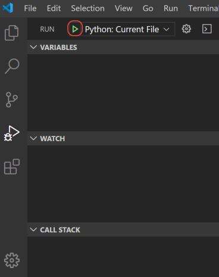
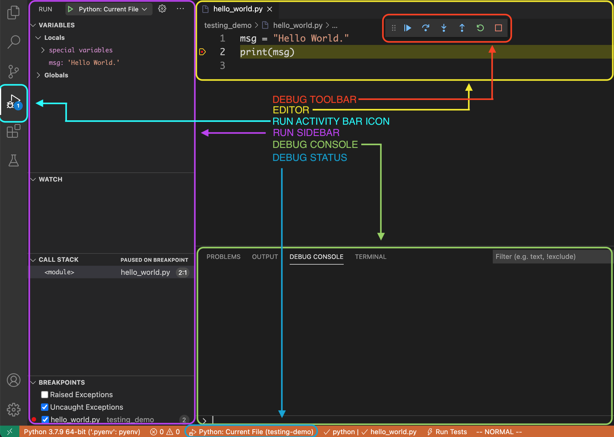

Using a Debugger¶
In the Reading Code lesson we learned how to walk through code step by step and figure out how a line is evaluated and what the value of a variable is are at a given point.
Thinking through code like this is a fundamental skill to develop. However, there’s also a tool can help us with this process. Usually it’s used for figuring out problems in code, which is why it’s called a debugger.
A debugger allows you to run a program normally until you reach a particular point you want to know more about. Then the program is paused so you can see what is in the scope at that point and experiment with code in the context of that line. From there you can go forward or backwards in the code or continue on until the next breakpoint.
Part 1: Setup¶
Step 1: Create Hello World¶
In VS Code, create a file named hello_world.py and paste the
following code and save it.
1 2 | msg = "Hello World"
print(msg)
|
Step 2: Configure¶
The first time you run the debugger for a particular project you’ll need to
configure it for that project. These settings are saved in the
.vscode/launch.json file which can be generated for you.
I. Click the Run icon on the activity bar to show the Run view in the sidebar.

II. Click the create a launch.json file link.

III. Select Python File from the menu that appears under the Command Palette.

The launch.json file will be created and opened for you.

IV. Add a comma to the end of the line that starts with "console", then add a
new line "redirectOutput": true.
1 2 3 4 5 6 7 8 9 10 11 12 13 14 15 16 | {
// Use IntelliSense to learn about possible attributes.
// Hover to view descriptions of existing attributes.
// For more information, visit: https://go.microsoft.com/fwlink/?linkid=830387
"version": "0.2.0",
"configurations": [
{
"name": "Python: Current File",
"type": "python",
"request": "launch",
"program": "${file}",
"console": "integratedTerminal",
"redirectOutput": true
}
]
}
|
Warning
The launch.json file is JSON, which looks a lot like Python but does have
some differences. The things you need to know for now are:
Single quotes are not allowed for strings. Be sure to use double quotes (
") aroundredirectOutput.trueshould be all lowercase, not capitalized
V. Save the file then close it.
Part 2: Run the debugger¶
Step 1: Add a breakpoint¶
The debugger will run the program normally until it hits a breakpoint, the place where we tell it to pause the program. Without any breakpoints the program will run normally. So we’ll start by adding a breakpoint.
Hover over the gutter on line 2 just to the left of the line number until
you see a dim red dot. To add a breakpoint click the dot. It will change to
solid red and stay there after you move your cursor.

Step 2: Start the debugger¶
Shortcut Key
macOS |
Windows |
Command |
|---|---|---|
F5 |
F5 |
Debug: Start Debugging |
I. Click the Run icon on the activity bar to open the Run view in the sidebar.
II. Next to the Run sidebar title you will see the launch configuration you just created. Click the play button to the left of Python: Current File.

The debugger will stop at the first breakpoint in the program. The current line will be highlighted with a yellow arrow in the gutter.

Step 3: Open the debug console¶
Shortcut Key
macOS |
Windows |
Command |
|---|---|---|
⇧⌘P |
⇧⌃P |
Debug Console |
If it’s not already open click the DEBUG CONSOLE title in the bottom panel.

Your program output will be shown here in addition to in the
Terminal while the debugger is running. (This behavior can be
changed via the redirectOutput setting in the launch.json file.)
Part 3: Inspecting data¶
Step 1: Variables in the sidebar¶
The Variables section in the sidebar is just like the Variables box from the Reading Code lesson. It lists everything that is defined at this point in the code execution and shows what it is set to.
In our hello_world.py debugging seession, you can see that the msg
variable listed with the value of "Hello World".

Step 2: Editor hover¶
You can also use the editor to see the current value of a variable. If you
hover your cursor over the variable name msg, a tooltip will pop up showing
you its current value.
Step 3: The debug console¶
Finally, you can use the DEBUG CONSOLE to get more information about your data and more.
The DEBUG CONSOLE is where you will see your programs output if
redirectOutput is set in the launch.json file. It is also a fully
functional Python REPL that operates in the context of the current line in the
program.
At the bottom of the DEBUG CONSOLE is a prompt where you can type input just like you would at a Python or IPython shell. The results will appear in the larger area above.

Let’s use this to get more information about the msg variable.
At the DEBUG CONSOLE prompt, type the the following commands and then hit enter after each.
msg
type(msg)
len(msg)
msg.istitle()
msg.isdigit()

You can also use the DEBUG CONSOLE to see available variables, functions and methods. Suggestions will appear as you type, and you can use the up or down arrows to scroll through the list.

Part 4: Basic stepping¶
Let’s learn how to use the debugger to walk through the code just like we did in the Reading Code lesson.
Step 4.1: Modify hello_world.py¶
Let’s start by adding to the hello_world.py file so we have a little
more to work with.
Add the following to the hello_world.py file.
1 2 3 4 5 6 7 8 | msg = "Hello World"
print(msg)
msg = "It's a lovely day for coding, isn't it?"
print(msg)
msg = "Farewell."
print(msg)
|
Now save the file and restart the debugger by clicking on the debug toolbar or by using the ⇧⌘F5 / ⇧⌃F5 keyboard shortcut.
Step 4.2: Step Into – Line 4¶
For this exercise we’ll be using the Step Into tool, which will step through the code one line at a time in the order that they are executed. The line highlighted in the debugger is the line that is about to execute.
Click  on the debug toolbar or use the F11
keyboard shortcut to go to the next line.
on the debug toolbar or use the F11
keyboard shortcut to go to the next line.
Notice that:
Line
4is now highlighted in the editor.Line
2has been executed so the output ofHello Worldappears in the DEBUG CONSOLE.

Step 4.3: Step Into – Line 5¶
Click on the debug toolbar or use the F11
keyboard shortcut to go to the next line.
Notice that:
Line
5is now highlighted in the editor.Line
4has been executed so the value of themsgvariable is now set to"It's a lovely day for coding, isn't it?"in the Variables section of the sidebar.
Step 4.4: Step Into – Line 7¶
Click on the debug toolbar or use the F11
keyboard shortcut to go to the next line.
Notice that:
Line
7is now highlighted in the editor.Line
5has been executed so the output ofIt's a lovely day for coding, isn't it?appears in the DEBUG CONSOLE.
Step 4.5: Step Into – Line 8¶
Click on the debug toolbar or use the F11
keyboard shortcut to go to the next line.
Notice that:
Line
8is now highlighted in the editor.Line
4has been executed so the value of themsgvariable is now set to"Farewell."in the Variables section of the sidebar.

Step 4.6: Continue¶
Since this is the last line of the program use Continue to finish the progam.
Click  on the debug toolbar or use the F5 keyboard
shortcut to go to continue to the end of the program.
on the debug toolbar or use the F5 keyboard
shortcut to go to continue to the end of the program.
Notice that:
Line
8has been executed so the output ofFarewell.appears in the DEBUG CONSOLE.The debugger has finished.

Part 5: Steeping through loops¶
Let’s see what happens when we do the same exercise, but this time with a for loop.
Step 5.1: Modify hello_world.py¶
Let’s change hello_world.py so that it uses a for loop.
Change the hello_world.py file so that it contains the following.
1 2 3 4 5 6 7 8 9 10 | messages = [
"Hello World",
"It's a lovely day for coding, isn't it?",
"Farewell.",
]
for msg in messages:
print(msg)
pass
|
Save the file.
Step 5.2: Modify your breakpoints¶
Remove the breakpoint from line 2 then add a breakpoint to line 1.

Step 5.3: Run the debugger¶
Run the debugger by clicking  in the sidebar or by using the F5 keyboard shortcut.
in the sidebar or by using the F5 keyboard shortcut.
Step 5.4: Step Into – Loop 1, Line 7¶
Click on the debug toolbar or use the F11
keyboard shortcut to go to the next line.
Notice that:
Line
7is now highlighted in the editor.Lines
1through5have been executed so themessagesvariable is now listed in the VARIABLES section of the sidebar.

The messages variable in the sidebar now has a > symbol to the left of it.
Click that to expand the section to see more details.

Step 5.5: Step Into – Loop 1, Line 8¶
Click on the debug toolbar or use the F11
keyboard shortcut to go to the next line.
Notice that:
Line
8is now highlighted in the editor.Lines
7has been executed so themsgvariable is now listed in the VARIABLES section of the sidebar.
Step 5.6: Step Into – Loop 2, Line 7¶
Click on the debug toolbar or use the F11
keyboard shortcut to go to the next line.
This time, instead of going to the next line in the file, the debugger goes to
line 7 again for the next iteration of the for loop.
Notice that:
Line
7is now highlighted in the editor.Lines
8from the previous loop has been executed the output ofHello Worldappears in the DEBUG CONSOLE.
Step 5.7: Step Into – Loop 2, Line 8¶
Click on the debug toolbar or use the F11
keyboard shortcut to go to the next line.
Notice that:
Line
8is now highlighted in the editor.Lines
7has been executed so themsgvariable is now updated in the VARIABLES section of the sidebar.
Step 5.8: Step Into – Loop 3, Line 7¶
Click on the debug toolbar or use the F11
keyboard shortcut to go to the next line.
This time, instead of going to the next line in the file, the debugger goes to
line 7 again for the next iteration of the for loop.
Notice that:
Line
7is now highlighted in the editor.Lines
8from the previous loop has been executed the output ofIt's a lovely day for coding, isn't it?appears in the DEBUG CONSOLE.
Step 5.9: Step Into – Loop 3, Line 8¶
Click on the debug toolbar or use the F11
keyboard shortcut to go to the next line.
Notice that:
Line
8is now highlighted in the editor.Lines
7has been executed so themsgvariable is now updated in the VARIABLES section of the sidebar.

Step 5.10: Step Into – Line 10¶
Click on the debug toolbar or use the F11
keyboard shortcut to go to the next line.
Notice that:
Line
10is now highlighted in the editor.Lines
8from the final loop has been executed the output ofFarewell.appears in the DEBUG CONSOLE.
Hint
The pass statement does nothing. I added it here so we can see the last line
of the program in the debugger.
Step 5.11: Stop the debugger¶
Click  on the debug toolbar or use the ⇧F5
keyboard shortcut to stop the debugger.
on the debug toolbar or use the ⇧F5
keyboard shortcut to stop the debugger.
Part 6: Stepping through functions¶
Let’s see what happens when we do the same exercise, but this time with functions.
Step 6.1: Setup¶
Let’s change hello_world.py so that it uses functions.
Change the hello_world.py file so that it contains the following.
1 2 3 4 5 6 7 8 9 10 11 12 13 14 15 | MESSAGES = [
"Hello World",
"It's a lovely day for coding, isn't it?",
"Farewell.",
]
def message(num):
print(MESSAGES[num])
def main():
message(0)
message(1)
message(2)
main()
|
Save the file and make sure your breakpoint is on line 1.
Step 6.2: Run the debugger¶
Run the debugger by clicking in the sidebar or by using the F5 keyboard shortcut.
Step 6.3: Line 7¶
Click on the debug toolbar or use the F11
keyboard shortcut to go to the next line.

Step 6.4: Line 10¶
Click on the debug toolbar or use the F11
keyboard shortcut to go to the next line.
Notice that under VARIABLES –> Locals there is a new listing: function variables. Expand it by clicking the > on the left.

You will see the message function listed. This is because lines 7-8,
where the message() function was defined, have been executed.
Step 6.5: Line 15¶
Click on the debug toolbar or use the F11
keyboard shortcut to go to the next line.
Notice that under VARIABLES –> Locals there is a new listing: function variables. Expand it by clicking the > on the left.
You will see the main function listed. This is because lines 10-13,
where the main() function was defined, have been executed.
Step 6.6: main() > Line 11¶
Click on the debug toolbar or use the F11
keyboard shortcut to go to the next line.

Step 6.7: main() > message() > Line 8¶
Click on the debug toolbar or use the F11
keyboard shortcut to go to the next line.

Step 6.8: main() > Line 11¶
Click on the debug toolbar or use the F11
keyboard shortcut to go to the next line.

Step 6.9: main() > Line 12¶
Click on the debug toolbar or use the F11
keyboard shortcut to go to the next line.

Step 6.10: main() > message() > Line 8¶
Click on the debug toolbar or use the F11
keyboard shortcut to go to the next line.

Step 6.11: main() > Line 12¶
Click on the debug toolbar or use the F11
keyboard shortcut to go to the next line.
Step 6.12: main() > Line 13¶
Click on the debug toolbar or use the F11
keyboard shortcut to go to the next line.

Step 6.13: main() > message() > Line 8¶
Click on the debug toolbar or use the F11
keyboard shortcut to go to the next line.
Step 6.14: main() > Line 13¶
Click on the debug toolbar or use the F11
keyboard shortcut to go to the next line.
Step 6.15: Line 15¶
Click on the debug toolbar or use the F11
keyboard shortcut to go to the next line.

Step 16.16: Stop the debugger¶
Click on the debug toolbar or use the ⇧F5
keyboard shortcut to stop the debugger.
Reference¶
Overview¶

Area |
Description |
|---|---|
|
Controller for stopping, starting and stepping through the code. |
|
The editor has additonal debug features. |
|
Button for opening the Run sidebar. |
|
Tools for managing breakpoints and inspecting data. |
|
Python REPL and program output. |
|
Debugger can be started from here as well. |
The debug toolbar¶
The debug toolbar is a controller widget that’s usually found hovering near the top of the editor.

Debug Actions
Button |
Shortcut |
Name |
Action |
|---|---|---|---|
|
F5 |
Continue |
Continue to the next breakpoint. |
F10 |
Step Over |
Go to the next line in the current scope. |
|
|
F11 |
Step Into |
Go to the next line to be executed. |
|
⇧F11 |
Step Out |
Go to the line that called this function. |
⇧⌘F5 |
Restart |
Restart the debugger. |
|
|
⇧F5 |
Stop |
Stop the debugger. |

Debug Console¶